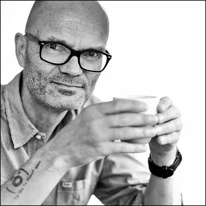

Über mich

Ich bin Michael Kleinespel, geboren 1962 in Dorsten. Bevor ich zum Fotografen wurde, habe ich in ganz anderen Berufen Verantwortung getragen: Ausbildung zum Bankkaufmann bei der Volksbank Dorsten, Firmenkundenberater bei der Commerzbank in Münster, Geschäftsführer einer Spedition mit 120 Mitarbeitern, dazwischen ein eigenes Restaurant in Bautzen aufgebaut.
Seit 25 Jahren fotografiere ich Menschen, die etwas zu sagen haben – über 20 Jahre in Frankfurt am Main, heute von meinem Studio in Bottrop aus.
Mein zweites Standbein wird die KI-Beratung kleiner Unternehmen, die ich gerade nach einer intensiven 3-monatigen Vollzeitweiterbildung beginne.
Für Politik interessiere ich mich seit meiner frühesten Jugend. Mitte der 1980er saß ich mit gerade einmal 23 Jahren für die CDU im Stadtrat meiner Heimatstadt Dorsten – als bis dahin jüngstes Mitglied, das der Rat je hatte. Später, beruflich nach Hessen gezogen, bin ich wegen der ausländerfeindlichen Kampagnen von Roland Koch aus der CDU ausgetreten. Seitdem habe ich wechselnd SPD und Grüne gewählt.
Heute bin ich bereit, auch Bundeskanzler Friedrich Merz eine ehrliche Chance zu geben. Sein Job ist kein leichter und ganz offensichtlich arbeitet er noch an seinem Stil.
Eine Mehrheit vom richtigen Weg zu überzeugen, gelingt nicht mit erhobenem Zeigefinger und besserwisserischer Attitüde – damit verliert man genau die Menschen, die man erreichen will.
Ganz oben auf diesem Blog steht:
„Du verlierst Kunden, wenn du dich so deutlich positionierst", höre ich oft. Ich sehe das anders: Klare Kante zeigen ist kein Luxus.
Das steht dort, weil es wichtig ist.